Session 5.6
Microbiological Test
- The Microbial Growth Triangle
- Microbes grow in condensate water and on tank surfaces and disperse into fuel because free water creates and sustains a viable environment for microorganisms to grow
- Microbes are inherent, and it is impossible to keep bugs out and fuel
- The primary strategy is prevention through water management i.e. daily Clear & Bright testing
- Sources
- Microbes can be airborne into storage tanks or carried from upstream infected systems.
- Microbes germinate/grow at any fuel/water interface, particularly tank bottoms and FWS coalescer socks
- The interface between aviation fuel and free stagnant water provides an excellent environment for the growth of micro-organisms such as bacteria, moulds, fungi or yeasts.
- These micro-organisms feed on the hydrocarbon molecules in jet fuel and, under ideal conditions, the organisms can reproduce themselves by the millions in a matter of days
- The resultant debris and slime easily plug filters and promote corrosion and damage to aircraft fuel tanks if allowed to proliferate.
- Some organisms produce waste products which are corrosive to some metals.
- Others are capable of making small but sometimes significant chemical changes to the fuel
- Effects
- Affects water separation properties (MSEP)
- Disarms FWS coalescers and leads to ‘leopard spotting’
- Blocks filters
- Causes corrosion of unlined tank bottoms
- Causes corrosion in aircraft fuel systems
- Can cause aircraft fuel gauge malfunction
- The presence of discoloured water (brown or black), a lacy interface between the fuel and water layers or organic debris in the fuel or water layer are all indications of likely microbiological activity
- VISUAL ASSESSMENT is the key test to detect microbiological growth
- Simple quantitative test for total microbial CFU
- Can be used on-site or in the laboratory
- Can be used to test water or fuel phase
- With swabs, can also be used to test surfaces
- IATA Approved
- Bottle after incubation showing colonies
- A sensitive growth indicator stains colonies purple-red to enable early visualisation
- Suggested Warning level for tank sump samples is 5 to 25 spots
- If greater than 25 spots – retest to confirm and quarantine tank.
- Number of microbial CFU per liter = Number of colonies counted or estimated x 1000 Volume of water or oil tested (ml)
- IATA has recommended limit values for microbiological growth (MBG) in AIRCRAFT fuel tanks
- Fuel Specifications do not prescribe Microbiological Growth (MBG) limit values
- Daily Appearance Check on a sump sample is required for assessing the presence of microbiological growth in storage tanks and filters
- Presence of discoloured water (brown or black), a lacy interface between the fuel and water layers or organic debris in the fuel or water layer are all indications of likely microbiological activity
- Any of these indications shall result in immediate investigations and specialist advice should be sought
- Warning and Action (quarantine) limits should be defined with reference to the IATA Guidance material on microbiological contamination in aircraft fuel tanks
- IATA contamination Limits
- Negligible : less than 4000 CFU*/l
- Moderate or Warning Level : more than 4000 but less than 20000 CFU*/l
- Heavy or Action Level : more than 20000 CFU*/l
- No routine testing is mandatory in storage tanks and refuellers
- Primary method of assessment remains the daily C&B testing
- Only dedicated DEFUELING vehicles need routine assay testing
- n order to extend tank cleaning intervals annual MBG testing is required for fixed storage tanks from the date of cleaning
- 2 On-site Tests for Microbes in Fuel or Water
- MicrobMonitor2
- HyLite Jet A-1
- "HIGH RISK" if at any time in the previous 2 years, “Action Level” microbial contamination has been detected at any sampling location on more than one occasion or if significant microbial growth has been observed during an inspection of tanks or filters
- "MODERATE RISK' if there has been a single incident of “Action Level” microbial contamination detected at any sampling location in the previous 2 years and/or if the facility operates under conditions which may be conducive to microbial growth (e.g. facilities in hot, humid environments, facilities where water or dirt is known to ingress or accumulate in tanks, facilities which are ship fed and facilities undergoing engineering works such as hydrant installation or repairs).
- Facilities which do not operate under conditions specifically conducive to microbial growth can be considered "LOW RISK'
- Recommended Routine Sampling 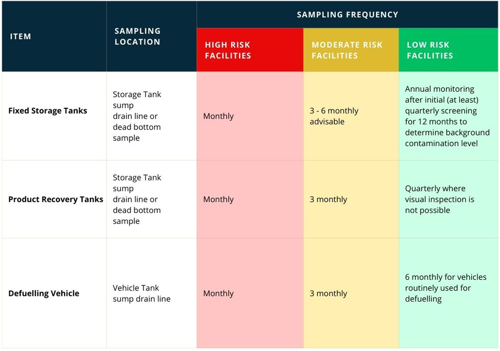
Micro-Organism Contamination
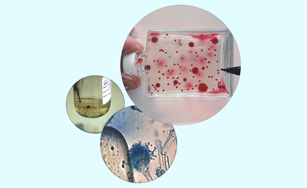
5.6.1 Microbial Growth Triangle
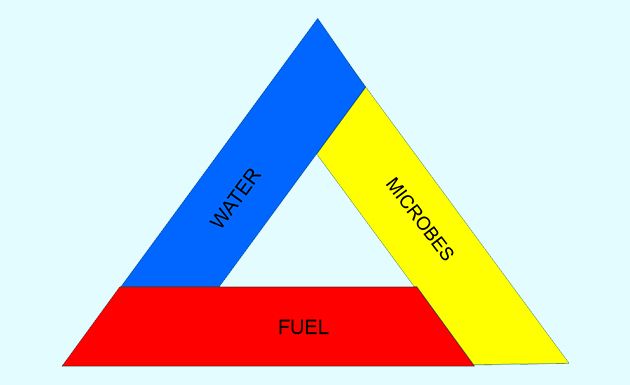
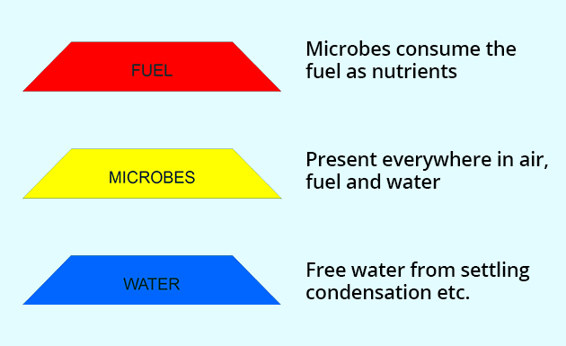
5.6.2 Microbial Contamination
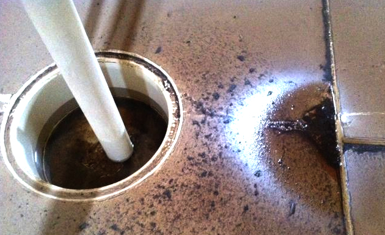
Effects of the Micro-Organism Contamination
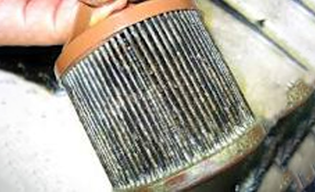
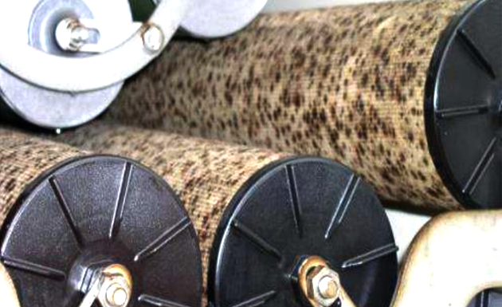
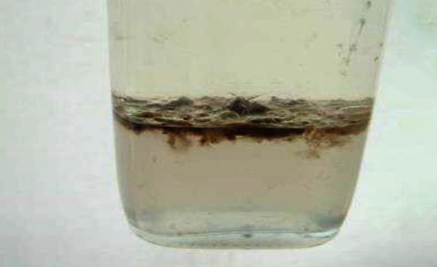
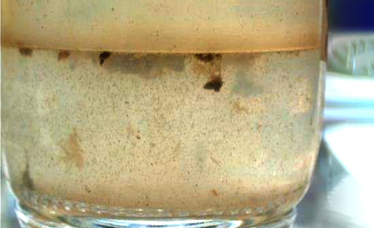
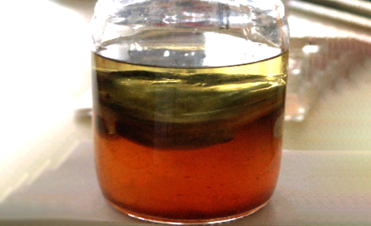
5.6.3 MicrobMonitor
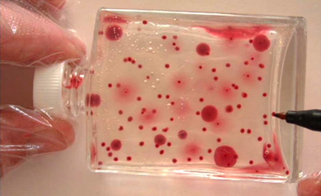
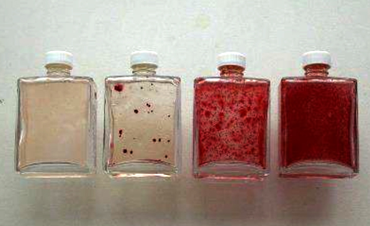

INTERPRETATION OF TEST RESULTS from Microbe Monitor Test kit
5.6.4 Microbial Monitoring
JIG Recommendations
Microbial Growth Risk Management
MBG monitoring program should be risk-based